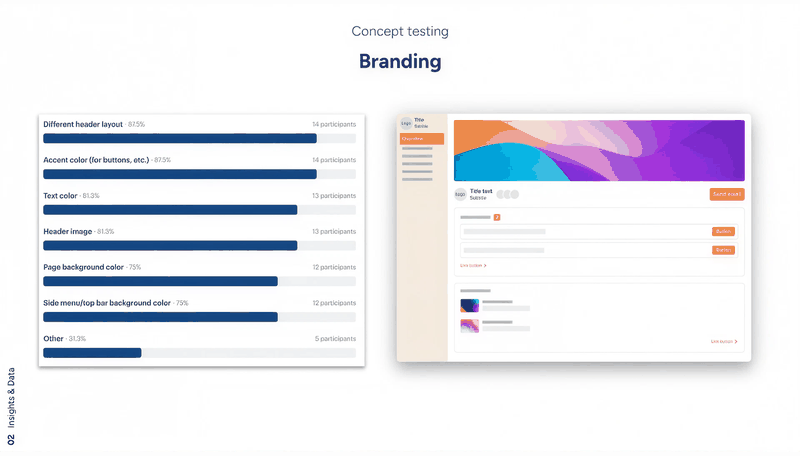
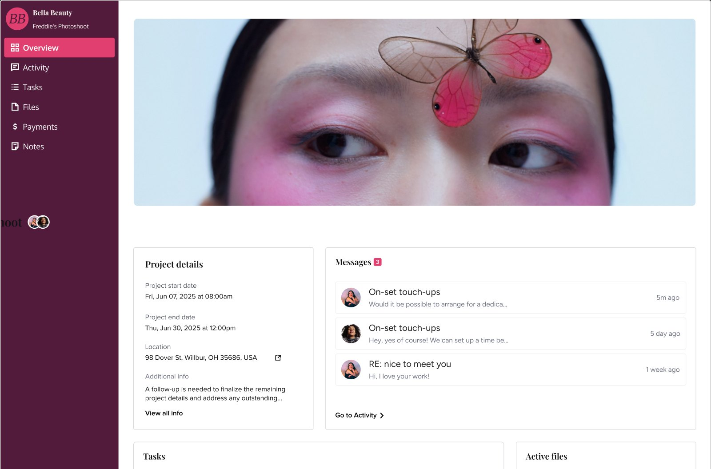
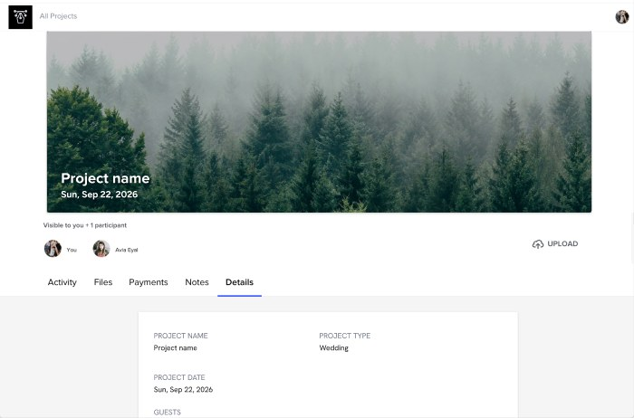
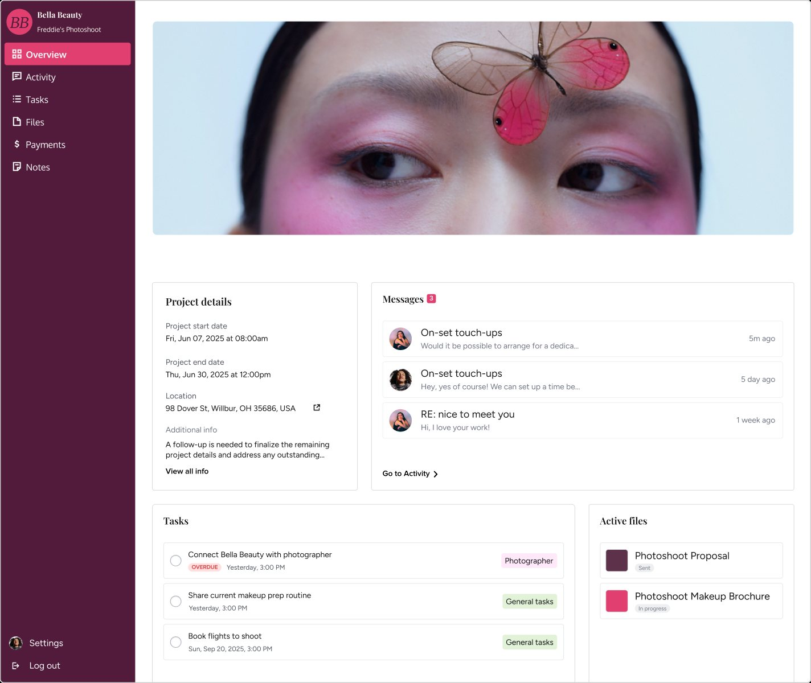
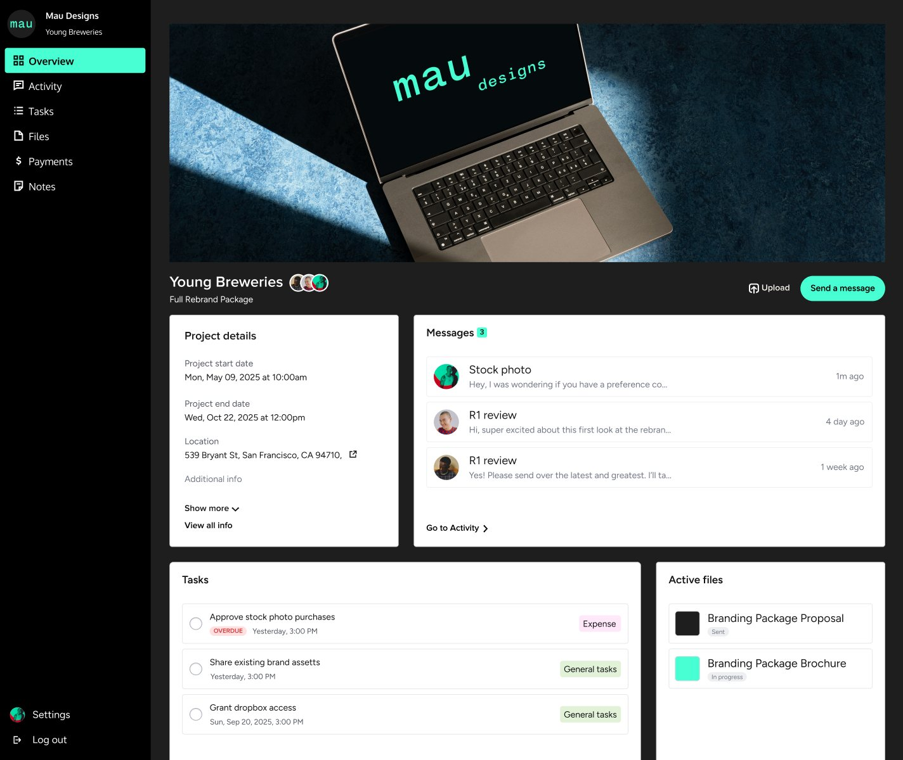
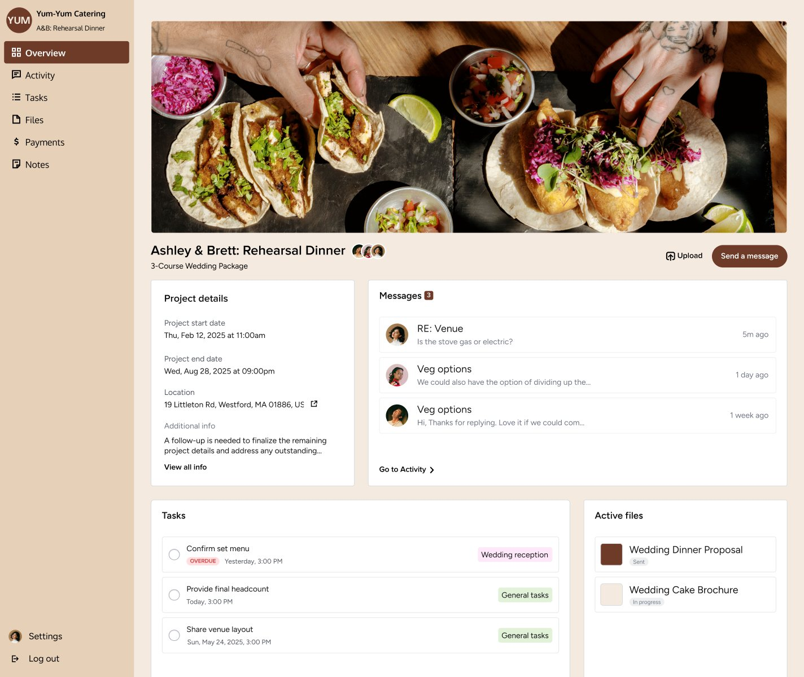
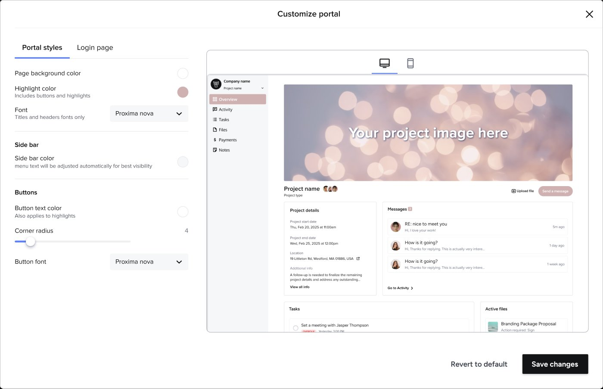
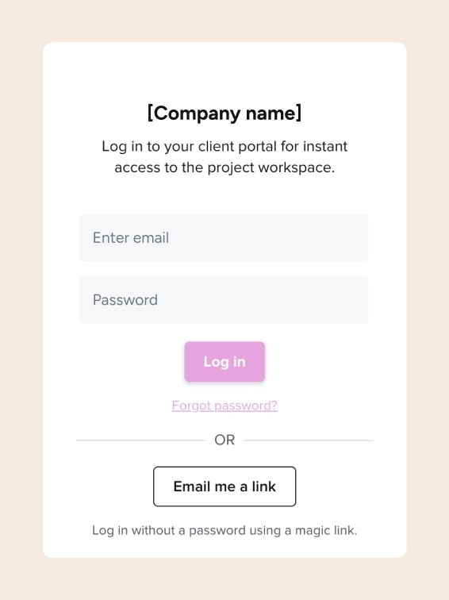
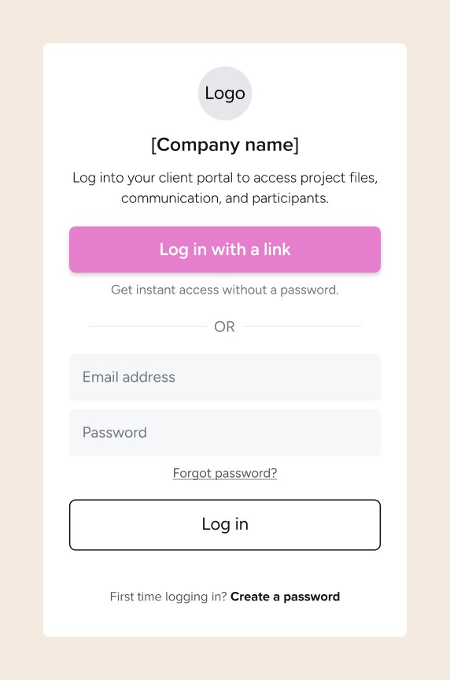

HONEYBOOK · CLIENT EXPERIENCE · 2025
Client Portal
How do you make a portal feel professional and branded, giving design freedom to the member, while keeping it scalable and consistent?

The redesigned portal, with the customization panel members use to theme it: sidebar navigation, project details, messages, tasks, and files, all carrying the member's own brand.
CONTEXT
The client portal is a hub where clients log in (via link, password, or access code) to reach project activity, smart files, messages, payments, and key details shared by the member. The previous portal fell short of its original promise: a page with no branding, no customization, and no way for a member to make it feel like their own business, and it showed in the numbers, only 6–10% of clients ever logged into it.
Research into what members felt HoneyBook wasn't delivering on kept surfacing the same theme: client experience was the biggest product driver of negative NPS. It was also an area where competitors had invested more than we had, after years of it being deprioritized. Our prediction was that investing in the client portal would reinforce our role as a trusted business partner, providing real, tangible value.
Every visual cue in the client portal either builds trust in the business that sent it, or undermines it.
after cost
the current portal
logged in
THE PROBLEM SPACE
I started by defining the jobs to be done. The client portal has two sides, the member side and the client side, and they have different requirements and priorities. To make sure I wasn't missing important considerations, I mapped what each of them needs from the portal.
![Jobs-to-be-done map in two rows of sticky notes. As a client: access all my information in one place, see all interaction with my vendor, easily access my client portal, schedule a meeting, centralize communication, mark tasks completed, upload files, ask about project details, pay easily, communicate with project participants, receive material in one place. As a vendor: give my client visibility to all their files, communications and payments, communicate with my client, give easy access to all their files, introduce the portal and explain functionality, showcase my brand, send messages in the portal, show a payment summary, let clients schedule a meeting, assign tasks, let clients see and complete tasks, decide whether there is a portal or not, make it accessible on desktop and mobile, show upcoming meetings, share and collaborate on notes, supply resources in one place](../assets/client-portal/jtbd.png)
RESEARCH
I ran an unmoderated concept test with our UX researcher, with 16 active members, before building anything. It tested five questions:
- What are members' views of the current portal?
- Which navigation framework works best for members: side menu or tabs?
- Which design for project activity do members prefer: a dedicated page, an overview section, or a notification center?
- Which items do members want to elevate for their clients' notice in outstanding items?
- Are the proposed options for customizing the portal's branding sufficient?

Slides from the concept test: the concepts members compared, and how they voted.
What came back:
- Almost all respondents used the portal for every project. They saw its most important purpose as contracts and payments, then managing client communication and files.
- Side navigation beat the existing tabs decisively: 14 of 16 preferred it.
- For surfacing outstanding items, a notifications center beat a dedicated page or an overview section once compared side by side (56% vs. 25% and 19%). Overdue invoices, unread messages, and unsigned contracts each cleared 75%+ endorsement as what belonged there.
- Branding tested even more decisively: 14 of 16 rated it very important, and every proposed customization option cleared a 75% essential threshold.
PROCESS
The before/after shows the shift those findings drove: from one flat, unbranded page to a full workspace with navigation, project details, and files, wearing the member's own colors and imagery.


Drag the handle to compare the old portal with the redesign.
Not everything the test pointed to made the release. It had to be an MVP, and two of the winning ideas carried heavy dev cost: the notifications center (56% in the test) and surfacing outstanding items. I decided to cut both rather than thin out the whole release, keeping the improvements big enough to make a difference: side navigation, the overview page, and full branding. Both cuts were parked with the same rule: if the need shows up in feedback after release, they come back onto the roadmap.
While working on the portal itself, I also designed two features to support the experience holistically: a design settings area for the portal, and an improved client authentication and login experience.
“The client experience is so important because… if it's not done correctly, it could break the relationship.”
VERBATIM FROM A MEMBER INTERVIEW (DIGITAL MARKETING & SEO)
WHAT SHIPPED
A new client portal that can be branded and customized to the member's needs.



The same portal, four members' brands: page and sidebar color, highlight color, and cover imagery are all member-set. Click a thumbnail to switch, click the large image to enlarge.
The portal branding customization modal. To keep it scalable, instead of giving members an option to select every color on the page, I limited the selection to three: background, sidebar, and highlight (used for buttons, links, the side nav selection, and other accent elements that would come down the road). I decided to keep the font color in the side nav automatically black or white, using an accessibility calculation, and kept the text readable by giving the cards a white background and not letting the running text be customizable.

A new login page for easier access. It pushes the client toward an easier and faster (but still secure) link login instead of a password, by something as simple as changing the hierarchy: the link became the main call to action, and the password a secondary one. In the 60 days after release, use of the link login rose 20%.


OUTCOME
Shipped a rebranded portal with side navigation, an overview page, full member-set branding, and an improved login and authentication experience, aimed at the problem that started it: a portal that only 6–10% of clients ever logged into. Once it looked like their own business, members put it in front of clients far more, and the share of clients logging in climbed to 22.6% over the 30 days post release. Both portal sharing and take-up of the new branding controls ran well past their targets.
portal, up from 6–10% before
their portal · goal was 10%
personalized branding · goal was 20%
with a link · 60 days post release